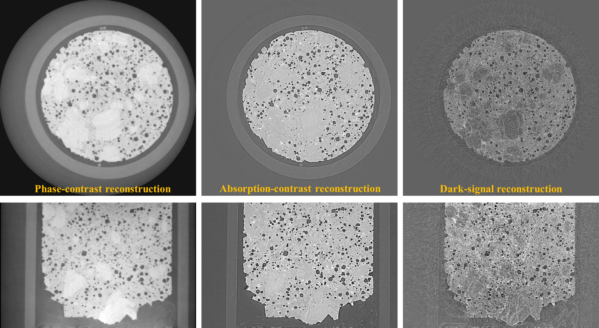

2. Features and capabilities
Algotom is a lightweight package. The software is built on top of a few core Python libraries to ensure its ease-of-installation. Methods distributed in Algotom have been developed and tested at synchrotron beamlines where massive datasets are produced. This factor drives the methods developed to be easy-to-use, robust, and practical. Some featuring methods in Algotom are as follows:
Methods for processing grid scans (or tiled scans) with the offset rotation-axis to multiply double the field-of-view (FOV) of a parallel-beam tomography system.

Methods for processing helical scans (with/without the offset rotation-axis).
Methods for determining the center-of-rotation (COR) and auto-stitching images in half-acquisition scans (360-degree acquisition with the offset COR).
Methods in a full data processing pipeline: reading-writing data, pre-processing, tomographic reconstruction, and post-processing.

Some practical methods developed and implemented for the package: zinger removal, tilted sinogram generation, sinogram distortion correction, beam hardening correction, DFI (direct Fourier inversion) reconstruction, and double-wedge filter for removing sample parts larger than the FOV in a sinogram.

Utility methods for customizing ring/stripe artifact removal methods and parallelizing computational work.
Calibration methods for determining pixel-size in helical scans.
Methods for generating simulation data: phantom creation, sinogram calculation based on the Fourier slice theorem, and artifact generation.
Methods for speckle-based phase-contrast tomography, image correlation, and image alignment.
